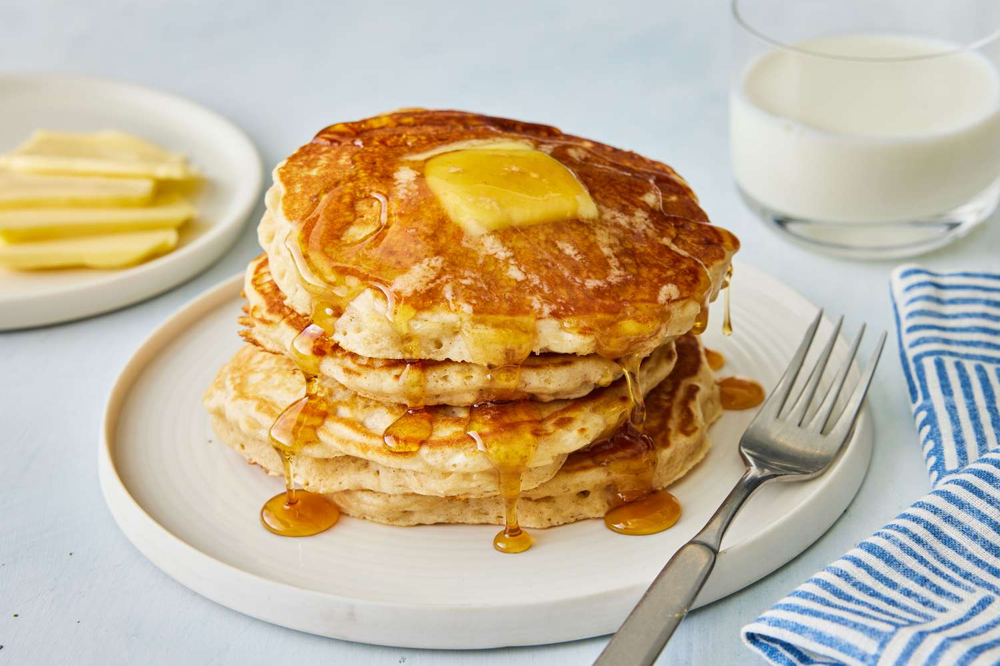

Pancakes

Description
Serve these pancakes with butter and syrup, or up the ante with toppings such as sprinkles, chopped bittersweet chocolate, and sliced or chopped fruit for a perfect breakfast.
Ingredients
- 2 cups whole milk
- 1/4 cup white vinegar
- 2 1/2 cups flour
- 3/4 cup sugar
- 2 teaspoons baking powder
- 1 teaspoon baking soda
- 1 teaspoon salt
- 3 large eggs
- 1 teaspoon vanilla extract
- 1 tablespoon butter, softened, or as needed, for greasing, plus more for serving
- toppings of choice, e.g. maple syrup or fruit, for serving
Steps
- Preheat a griddle to 300 degrees F (175 degrees C).
- Stir together milk and vinegar in a small bowl or a 4-cup liquid measuring cup.
- Whisk together flour, sugar, baking powder, baking soda, and salt in a second bowl.
- Beat eggs in a large bowl until smooth. Add vanilla and milk mixture; whisk together. Add flour mixture to bowl with egg mixture and whisk until just combined. (Batter will be lumpy.) Let rest 3 minutes and gently stir again.
- Melt some butter on the griddle, then carefully wipe with a paper towel. (You want just a bit of a sheen; dont overgrease the griddle.) Spoon batter in 1/3-cup portions onto griddle. Cook until bubbles form on surface of batter, about 2 1/2 minutes.
- Flip pancakes and cook until browned on the other side, about 1 1/2 minutes more. Repeat with remaining batter. Serve immediately with butter and toppings.
Nutrition facts
Servings Per Recipe: 6
Calories: 409
- Total Fat: 8g
- Saturated fat: 4g
- Cholesterol: 106mg
- Sodium: 812mg
- Total Carbohydrate: 73g
- Dietary Fiber: 2g
- Total Sugars: 32g
- Protein: 11g
- Vitamin C: 12mg
- Calcium: 210mg
- Iron: 3mg
- Potassium: 261mg